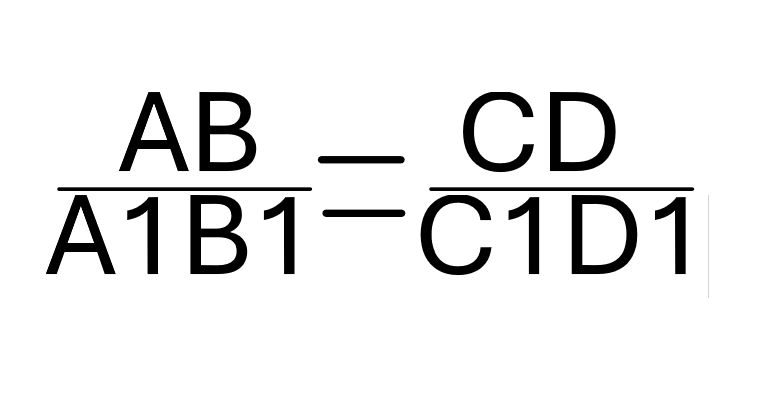
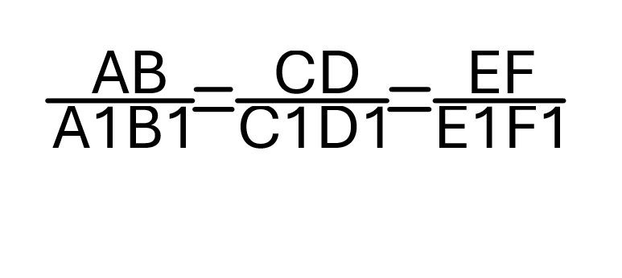

Равносоставленные многоугольники - многоугольники, один из которых составлен из многоугольников, на которые разрезан второй многоугольник.
Площадь прямоугольника
Площадь прямоугольника равна произведению его смежных сторон.
Площадь параллелограмма
Основание - одна из сторон параллелограмма.
Высота параллелограмма - перпендикуляр, проведенный из любой точки противоположной стороны к прямой, содержащей основание.
Площадь параллелограмма равна произведению его основания на высоту.
Площадь треугольника
Площадь треугольника равна половине произведения его основания на высоту.
Следствия:
-- Площадь прямоугольного треугольника равна половине произведения его катетов.
-- Если высоты двух треугольников равны, то их площади относятся как основания
Если угол одного треугольника равен углу другого треугольника, то площади этих треугольников относятся как произведения сторон, заключающих равные углы.
Площадь трапеции
Высота трапеции - перпендикуляр, проведенный из любой точки одного из оснований к прямой, содержащей другое основание.
Площадь трапеции равна произведению полусуммы ее оснований на высоту.
Теорема Пифагора
В прямоугольном треугольнике квадрат гипотенузы равен сумме квадратов катетов.
Теорема, обратная теореме Пифагора
Если квадрат одной стороны треугольника равен сумме квадратов двух других сторон, то треугольник прямоугольный.
Формула Герона
Площадь S треугольника со сторонами a, b, c выражается формулой:
Отношением отрезков AB и CD называется отношенией их длин, т.е. AB/CD
Отрезки AB и CD пропорциональны отрезкам A1B1 и C1D1, если

Три отрезка AB, CD и EF пропорциальны трем отрезкам A1B1, C1D1 и E1F1, если справедливо равенство

Определение подобных треугольников
Определение: два треугольника называются подобными, если их углы соответственно равны и стороны одного треугольника пропорциональны сходственным сторонам другого треугольника.
Число k, равное отношению сходственных сторон подобных треугольников, называется коэффициентом подобия.
Отношение площадей подобных треугольников
Теорема: отношение площадей двух подобных треугольников равно квадрату коэффициента подобия.
Признаки подобия треугольников
1 признак: если два угла одного треугольника соответственно равны двум углам другого, то такие треугольники подобны.
2 признак: если две стороны одного треугольника пропорциональны двум сторонам другого треугольника и углы, заключенные между этими сторонами равны, то такие треугольники подобны.
3 признак: если три стороны одного треугольника пропорциональны трем сторонам другого, то такие треугольники подобны.
Средняя линия треугольника
Средняя линия треугольника - отрезок, соединяющий середины двух его сторон.
Теорема: средняя линия треугольника параллельна одной из его сторон и равна половине этой стороны
Медианы треугольника пересекаются в одной точке, которая делит каждую медиану в отношении 2:1, считая от вершины
Пропорциональные отрезки в прямоугольном треугольнике
Высота прямоугольного треугольника, проведённая из вершины прямого угла, разделяет треугольник на два подобных прямоугольных треугольника, каждый из которых подобен данному треугольнику
Отрезок XY называется средним пропорционалтным или средним геометрическим, для отрезков AB и CD, если XY =
Высота прямоугольного треугольника, проведенная из вершины прямого угла, есть среднее пропорциональное для отрезков, на которые делится гипотенуза этой высотой
Катет прямоугольного треугольника есть среднее пропорциональное для гипотенузы и отрезка гипотенузы, заключенного между катетом и высотой, проведенной из вершины угла
Синус, косинус и тангенс острого угла прямоугольного треугольника
Синусом острого угла прямоугольного треугольника называется отношение противолежащего катета к гипотенузе.
Косинусом острого угла прямоугольного треугольника называется отношение прилежащего катета к гипотенузе.
Тангенсом острого угла прямоугольного треугольника называется отношение противолежащего катета к прилежащему катету.
Тангенс угла равен отношению синуса к косинусу этого угла.
Основное тригонометрическое тождество:
sin2A + cos2A = 1
Значения синуса, косинуса и тангенса для углов 30°, 45° и 60°
--- Если расстояние от цента окружности до прямой меньше радиуса окружности, то прямая и окружность имеют две общие точки, а прямая называется секущей по отношению к окружности.
--- Если расстояние от цента окружности до прямой равно радиусу окружности, то прямая и окружность имеют только одну общую точку, а прямая называется касательной к окружности, а их общая точка называется точкой касания прямой и окружности.
--- Если расстояние от цента окружности до прямой больше радиуса окружности, то прямая и окружность не имеют общих точек.
Касательная к окружности
Теоремы:
--- Касательная к окружности перпендикулярна к радиусу, проведенному в точку касания.
--- Если прямая проходит через конец радиуса, лежащий на окружности, и перпендикулярна к этому радиусу, то она является касательной.
Свойство: отрезки касательных к окружности, проведенные из одной точки, равны и составляют равные углы с прямой, проходящей через эту точку и центр окружности.
Центральные и вписанные углы
Дуга называется полуокружностью, если отрезок, соединяющий ее концы, является диаметром окружности.
Центральный угол - угол с вершиной в центре окружности.
Если дуга AB окружности с центром O меньше полуокружности или является полуокружностью, то ее градусная считается равной градусной мере центрального угла AOB.
Если дуга AB больше полуокружности, то ее градусная мера считается равной 360°-∠AOB
Сумма градусных мер двух дуг окружности с общими концами равна 360°.
Вписанный угол - угол, вершина которого лежит на окружности, а стороны пересекают окружность.
Теорема: вписанный угол измеряется половиной дуги, на которую он опирается.
Следствия:
--- Вписанные углы, опирающиеся на одну и ту же дугу, равны.
--- Вписанный угол, опирающийся на полуокружность, - прямой.
Теорема: если две хорды окружности пересекаются, то произведение отрезков одной хорды равно произведению отрезков другой хорды.
Свойства биссектрисы угла
Теорема: каждая точка биссектрисы неразвернутого угла равноудалена от его сторон
Следствия:
--- Геометрическим местом точек плоскости, лежащих внутри неразвернутого угла и равноудаленных от сторон угла, является биссектриса этого угла.
--- Биссектрисы треугольника пересекаются в одной точке.
Свойства серединного перпендикуляра к отрезку
Серединный перпендикуляр к отрезку - прямая, проходящая через середину данного отрезка и перпендикулярная у нему.
Теорема:
Каждая точка серединного перпендикуляра к отрезку равноудалена от концов этого отрезка.
Обратно: каждая точка, равноудаленная от концов отрезка, лежит на серединном перпендикуляре к нему.
Следствия:
--- Геометрическим местом точек плоскости, равноудаленных от концов отрезка, является серединный перпендикуляр к этому отрезку.
--- Серединные перпендикуляры к сторонам треугольника пересекаются в одной точке.
Теорема о пересечении высот треугольника
Высоты треугольника (или их продолжения) пересекаются в одной точке, которая называется ортоцентром треугольника.
Вписанная окружность
Если все стороны многоугольника касаются окружности, то окружность называется вписанной в многоугольник, а многоугольник - описанным около этой окружности.
Теорема: в любой треугольник можно вписать окружность.
В треугольник можно вписать только одну окружность.
Площадь треугольника равна произведению его полупериметра на радиус вписанной в него окружности.
S = r*
AB + BC + AC2
Не во всякий четырехугольник можно вписать окружность.
В любом описанном четырехугольнике суммы противоположных сторон равны.
Если суммы противоположных сторон выпуклого четырехугольника равны, то в него можно вписать окружность.
Описанная окружность
Если все вершины многоугольника лежат на окружности, то окружность называется описанной около многоугольника, а многоугольник- вписанным в эту окружность.
Теорема: около любого треугольника можно описать окружность.
Около треугольника можно описать только одну окружность.
Около четырехугольника не всегда можно описать окружность.
В любом вписанном четырехугольнике сумма противоположных углов равна 180°.
Если сумма противоположных углов четырехугольника равна 180°, то около него можно описать окружность.